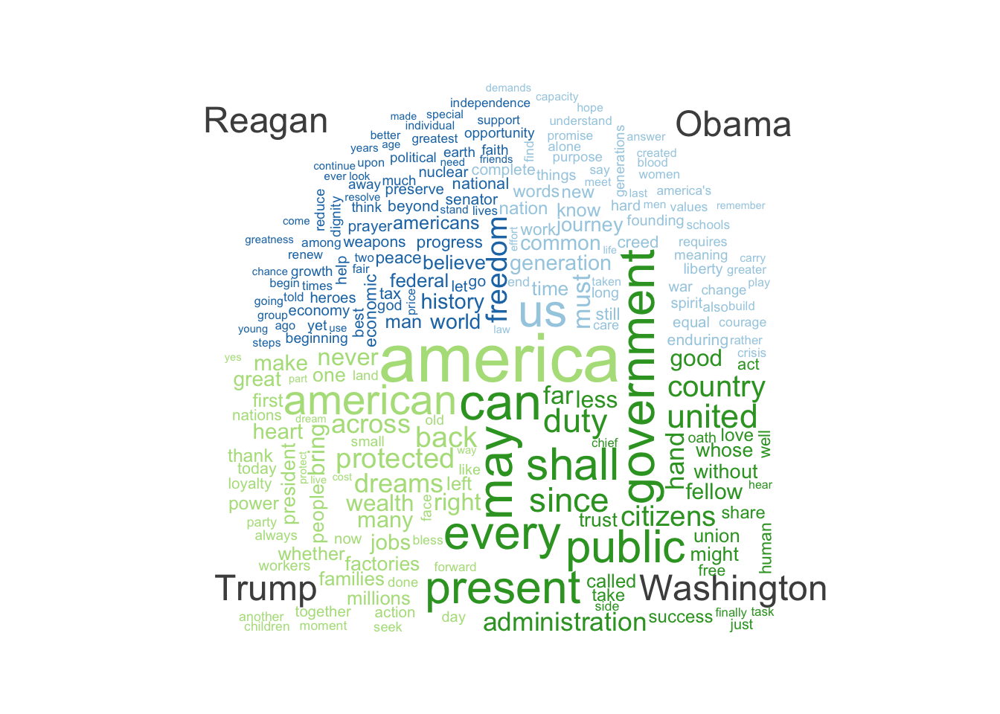

library(tidyverse)
library(quanteda)
library(glue)Natural Language Processing
Intro to Text Analysis
Text data is often the most prevalent forms of data available for social scientists. From archival data to social media, text data is an essential part of social scientific inquiries. Text data comes in various shapes and forms including social media posts, comments, profile descriptions, news articles, product reviews, and open-ended survey questions. We will explore the basics of approaching text analysis using computational techniques.
We will use stringr for wrangling the text data. Another useful package is glue, which makes interpolating data into strings very easy. The stringr packge is part of tidyverse, which means that if you installed tidyverse, you already have it installed. For further analysis of text data we will use quanteda.
Note
Another popular package for text analysis is tidytext. This is a tidy approach to text mining. A free textbook about using tidytext for text mining is available online, as well as an introduction vignette.

We will first explore what text data is, how to pre-process text data, and how to conduct basic text data analysis. But first, let’s load the packages.
Understanding Text Data
Text Data in R
There are several different data types. In R, we have data types such as integer, numeric, factor, etc. Text data are commonly treated as string or character type. Let’s take a glimpse at how computers understand text as a string of characters.
text <- "Hello world!"
class(text)[1] "character"R recognizes this as a character data type.
length(text)[1] 1Length function returns 1, meaning that the totality of “Hello world!” inside the quotation mark is considered as a single character element. But, one might wonder: isn’t “Hello world!” a collection of alphabets and an exclamation mark? Can we decide length of this character based on that?
str_length(text)[1] 12This means we can navigate this text based on specific location of a character.
str_sub(text, 7, 11)[1] "world"If you remember concatenation in R, you can turn multiple strings into a list of words.
words <- c("Spring", "break", "is", "coming")
class(words)[1] "character"
Note
Refresher: You can concatenate numbers and strings together, but the numbers will become characters and will not be treated as numeric variable. See below how 1, 2 becomes “1”, “2”
mixed <- c(1, 2, "four", "five")
print(mixed)[1] "1" "2" "four" "five"The length function will then count the elements in the list words.
length(words)[1] 4This means you can also access each element with square brackets.
# a glimpse of what glue package can do
glue("words[1]: {words[1]}", "\n", # \n is for new line
"words[2]: {words[2]}")words[1]: Spring
words[2]: breakYou can also join multiple character vectors into one character. Take a look at the str_c function, putting together the words in words list into one character.
sentence <- str_c(words, collapse = " ") # collapse option specifies the strings you want to use to combine the strings (i.e., what comes between them)
sentence[1] "Spring break is coming"stringr to Deal with Text in R
The stringr package comes with a wide variety of functions that is highly useful in dealing with text data in R. Below are some functions that are frequently used to navigate through and transform text data in R.
| String Operation | stringr Function |
|---|---|
| Count characters in s | str_length(s) |
| Extract a substring | str_sub(s, n1, n2) |
| Test if s contains s2 | str_detect(s, s2) |
| Count number of matches of s2 | str_count(s, s2) |
| Strip spaces (at start and end) | trimws(s) |
| Convert to lowercase/uppercase | tolower(s) / toupper(s) |
| Find s1 and replace by s2 | str_replace(s, s1, s2) |
| Trims repeated whitespaces to one space | str_squish(s) |
text <- " <p><h1>Digital Advertising:</h1> learn Traditional and Digital Ad. </p>"
# Remove HTML tags
str_replace_all(text, "<p>", " ")[1] " <h1>Digital Advertising:</h1> learn Traditional and Digital Ad. </p>"# use piping
clean_text <- text %>%
str_replace_all("<h1>", "") %>%
str_replace_all("</h1>", "") %>%
str_replace_all("</p>", "") %>%
str_replace_all("<p>", "") %>%
# convert to lower case
tolower() %>%
# trim spaces at the start and end
trimws()
# Result
clean_text[1] "digital advertising: learn traditional and digital ad."str_length(clean_text)[1] 54str_sub(clean_text, 1, 10)[1] "digital ad"str_count(clean_text, "digital")[1] 2str_detect(clean_text, "traditional")[1] TRUEPractice 1
Use the code below to install and load Pride & Prejudice from janeaustenr package.
library(janeaustenr)
pride_txt <- prideprejudice
head(pride_txt, 20) [1] "PRIDE AND PREJUDICE"
[2] ""
[3] "By Jane Austen"
[4] ""
[5] ""
[6] ""
[7] "Chapter 1"
[8] ""
[9] ""
[10] "It is a truth universally acknowledged, that a single man in possession"
[11] "of a good fortune, must be in want of a wife."
[12] ""
[13] "However little known the feelings or views of such a man may be on his"
[14] "first entering a neighbourhood, this truth is so well fixed in the minds"
[15] "of the surrounding families, that he is considered the rightful property"
[16] "of some one or other of their daughters."
[17] ""
[18] "\"My dear Mr. Bennet,\" said his lady to him one day, \"have you heard that"
[19] "Netherfield Park is let at last?\""
[20] "" - Use
stringrto convert thepride_txtto lower case. Useheadfunction to inspect the first several observations.
Show the code
lowertxt <- tolower(pride_txt)
head(lowertxt, 50)- Use
stringrto replace “mr.” with “mr”. Inspect the difference. Useheadfunction to make it manageable.
Show the code
head(str_replace_all(lowertxt, "mr.", "mr"), 50)Text Analysis Concepts
We will use quanteda for further text analysis. You might have to install packages and load them using the code below.
## Install Packages
# install.packages("quanteda.textplots")
# install.packages("quanteda.textstats")
# install.packages("quanteda.textmodels")
# install.packages("devtools")
# devtools::install_github("quanteda/quanteda.corpora")
library(quanteda.corpora)
library(quanteda.textplots)
library(quanteda.textstats)Tokenization
A central concept that you have to understand when performing computational text analysis or natural language processing (NLP) is tokenization. Computers can’t identify words naturally. Let’s say we have a string, “spring break is almost here.” Computers can’t tell how many words are in this string. In order for a computer to identify words, you ahve to tell it how to “parse” the text. In other words, how to break down a string into its linguistic parts.
Tokenizing is the most common way of parsing text data, where you treat each word as a “token.” It is the process of defining the unit of analysis. You can tokenize sentences, which would result in sentence tokens. In most cases, however, word-level tokenization is used.
In quanteda packages, tokens() function is used for tokenization. This function produces object consisting of a list of tokens in the form of character vectors.
text <- "Watch your speed while driving in monsoon weather!"
tokens(text)Tokens consisting of 1 document.
text1 :
[1] "Watch" "your" "speed" "while" "driving" "in" "monsoon"
[8] "weather" "!" You can also tokenize a vector of strings.
texts <- c("Watch your speed while driving in monsoon weather!",
"Winter is coming")
tokens(texts)Tokens consisting of 2 documents.
text1 :
[1] "Watch" "your" "speed" "while" "driving" "in" "monsoon"
[8] "weather" "!"
text2 :
[1] "Winter" "is" "coming"As we can see here, tokens() retains everything, including the exclamation mark, by default. When we analyze text in large scale, we usually don’t want to analyze noise caused by punctuation marks or filler words that do not carry meaning. tokens() offer several arguments that are useful in filtering out some of these noises. Some of these common noises we want to discard include punctuation, numbers, symbol, hyphens, etc.
texts <- c(
t1 = "RT: @john_doe https://example.com/news VERY interesting!",
t2 = "This is $10 in 999 different ways,\n up and down; left and right!",
t3 = "@me and @myself #selfietime"
)
tokens(texts)Tokens consisting of 3 documents.
t1 :
[1] "RT" ":"
[3] "@john_doe" "https://example.com/news"
[5] "VERY" "interesting"
[7] "!"
t2 :
[1] "This" "is" "$" "10" "in" "999"
[7] "different" "ways" "," "up" "and" "down"
[ ... and 5 more ]
t3 :
[1] "@me" "and" "@myself" "#selfietime"tokens(texts, remove_numbers = TRUE, remove_punct = TRUE)Tokens consisting of 3 documents.
t1 :
[1] "RT" "@john_doe"
[3] "https://example.com/news" "VERY"
[5] "interesting"
t2 :
[1] "This" "is" "$" "in" "different" "ways"
[7] "up" "and" "down" "left" "and" "right"
t3 :
[1] "@me" "and" "@myself" "#selfietime"tokens(texts, remove_numbers = FALSE, remove_punct = TRUE)Tokens consisting of 3 documents.
t1 :
[1] "RT" "@john_doe"
[3] "https://example.com/news" "VERY"
[5] "interesting"
t2 :
[1] "This" "is" "$" "10" "in" "999"
[7] "different" "ways" "up" "and" "down" "left"
[ ... and 2 more ]
t3 :
[1] "@me" "and" "@myself" "#selfietime"tokens(texts,
remove_numbers = TRUE,
remove_punct = TRUE,
remove_url = TRUE,
remove_symbols = TRUE)Tokens consisting of 3 documents.
t1 :
[1] "RT" "@john_doe" "VERY" "interesting"
t2 :
[1] "This" "is" "in" "different" "ways" "up"
[7] "and" "down" "left" "and" "right"
t3 :
[1] "@me" "and" "@myself" "#selfietime"Stopwords, Stemming, and Lemmatizing
We started to touch upon some basic text data cleaning. In addition to numbers or punctuation, one of the first steps in NLP processing is to remove words that do not contain much information, but occur frequently. For instance, words such as “a” or “the” occur frequently but rarely carry any meaning. To achieve this, we use stopword lists, or lists of words we want to exclude from our analysis. quanteda comes with predefined stopwords for many languages. You can access them through the stopwords() function. See the stopword page for more details about available languages.
head(stopwords("en"), 20) [1] "i" "me" "my" "myself" "we"
[6] "our" "ours" "ourselves" "you" "your"
[11] "yours" "yourself" "yourselves" "he" "him"
[16] "his" "himself" "she" "her" "hers" head(stopwords("korean", source = "marimo"), 20) [1] "나" "내" "나에게" "내게" "저는" "제가" "저에게" "제게"
[9] "우리" "우리들" "너희" "너희들" "당신" "당신들" "그" "그들"
[17] "그녀" "그녀들" "그" "그것" To delete the stopwords, we can use tokens_select() with the following arguments.
# Save the tokenized item
txt_tokens <- tokens(texts,
remove_numbers = TRUE,
remove_punct = TRUE,
remove_url = TRUE,
remove_symbols = TRUE) %>%
tokens_tolower()
# Remove the stopwords
txt_tokens_clean <- tokens_select(txt_tokens,
stopwords("en"),
selection = "remove")
txt_tokens_cleanTokens consisting of 3 documents.
t1 :
[1] "rt" "@john_doe" "interesting"
t2 :
[1] "different" "ways" "left" "right"
t3 :
[1] "@me" "@myself" "#selfietime"
Note
Sometimes, stopwords require closer attention. For instance, consider the word “will.” “Will” can be considered a stop word as an auxiliary verb. However, it can also be a noun (a testament) or a name (Will). If your research questions require a certain stop words, you can customize your own stop word lists.
Another text pre-processing considerations we should focus on are stemming and lemmatization. From my personal perspective, these are the processes similar to “standardizing” different versions of words. Stemming is the process of removing stems (suffixes and prefixes) from a word. This helps us consolidate words like “immigration,” “immigrating,” and “immigrants” into one root word “immigra.” We can use the tokens_wordstem() function to do stemming.
txt <- c(one = "eating eater eaters eats ate",
two = "taxing taxes taxed my tax return")
tokens(txt) %>%
tokens_wordstem()Tokens consisting of 2 documents.
one :
[1] "eat" "eater" "eater" "eat" "ate"
two :
[1] "tax" "tax" "tax" "my" "tax" "return"You notice that this made the overall number of tokens gets smaller and manageable. However, you also notice that “ate” was not collapsed into the “eat” stem. To do this, we need a more advanced approach called lemmatization. It is better at finding meaningful words/representation, but is computationally expensive. See below for the comparison.
| Stemming | Lemmatization |
|---|---|
| Stemming is a process that stems or removes last few characters from a word, often leading to incorrect meanings and spelling. | Lemmatization considers the context and converts the word to its meaningful base form, which is called Lemma. |
| Example: stemming the word ‘Caring’ would return ‘Car’. | Example: lemmatizing the word ‘Caring’ would return ‘Care’. |
| Stemming is used in case of large dataset where performance is an issue. | Lemmatization is computationally expensive since it involves look-up tables and what not. |
To lemmatize your tokens using quanteda, you need to access separate lemma tables and replace your tokens using tokens_replace()
tokens_replace(tokens(txt),
pattern = lexicon::hash_lemmas$token,
replacement = lexicon::hash_lemmas$lemma)Tokens consisting of 2 documents.
one :
[1] "eat" "eater" "eater" "eat" "eat"
two :
[1] "tax" "tax" "tax" "my" "tax" "return"Corpus
Notice in the code below, when we tokenize the string vector, quanteda arranges it separately as “one” and “two.” quanteda is recognizing each string as a “document.” In our actual analysis, we would be dealing with a large number of such documents. In quanteda term, this set of documents is called corpus. The corpus in qunateda is a collection (library) of text documents (e.g., X posts, document files). You can convert a data frame to a corpus using the function corpus().
corp <- corpus(data_corpus_inaugural) # read in a built-in corpus available in quanteda.corpora package
# this is a US presidential inaugural address texts
head(corp)Corpus consisting of 6 documents and 4 docvars.
1789-Washington :
"Fellow-Citizens of the Senate and of the House of Representa..."
1793-Washington :
"Fellow citizens, I am again called upon by the voice of my c..."
1797-Adams :
"When it was first perceived, in early times, that no middle ..."
1801-Jefferson :
"Friends and Fellow Citizens: Called upon to undertake the du..."
1805-Jefferson :
"Proceeding, fellow citizens, to that qualification which the..."
1809-Madison :
"Unwilling to depart from examples of the most revered author..."class(corp)[1] "corpus" "character"summary(corp) %>% head() Text Types Tokens Sentences Year President FirstName
1 1789-Washington 625 1537 23 1789 Washington George
2 1793-Washington 96 147 4 1793 Washington George
3 1797-Adams 826 2577 37 1797 Adams John
4 1801-Jefferson 717 1923 41 1801 Jefferson Thomas
5 1805-Jefferson 804 2380 45 1805 Jefferson Thomas
6 1809-Madison 535 1261 21 1809 Madison James
Party
1 none
2 none
3 Federalist
4 Democratic-Republican
5 Democratic-Republican
6 Democratic-RepublicanDocument-Feature Matrix (DFM)
A document-feature matrix (DFM) or document-term matrix transforms a corpus into a matrix or table, where each row represents a document, each column represents a term (word), and the numbers in each cell show how often that word occurs in that document. The word “feature” or “term” simply refers to the unit of analysis being counted. Note that this process removes the order of the words. This approach of not considering the order of words is considered a bag-of-word strategy. Although we lose some information related to words in orders, this makes it easier to identify commonly used keywords and pattern-recognition tasks.
In quanteda you can create a DFM using dfm() function. dfm() function takes in tokenized objects. Let’s look at an example.
# tokenize the corpus
tok_corp <- tokens(corp,
remove_numbers = TRUE,
remove_punct = TRUE) %>%
tokens_wordstem() %>%
tokens_tolower()
tok_corp_stopword <- tokens_select(tok_corp,
stopwords("en"),
selection = "remove")
corp_dfm <- dfm(tok_corp_stopword)
corp_dfmDocument-feature matrix of: 59 documents, 5,451 features (89.22% sparse) and 4 docvars.
features
docs fellow-citizen senat hous repres among vicissitud incid life
1789-Washington 1 1 2 2 1 1 1 1
1793-Washington 0 0 0 0 0 0 0 0
1797-Adams 3 1 3 3 4 0 0 2
1801-Jefferson 2 0 0 1 1 0 0 1
1805-Jefferson 0 0 0 0 7 0 0 2
1809-Madison 1 0 0 1 0 1 0 1
features
docs event fill
1789-Washington 2 1
1793-Washington 0 0
1797-Adams 0 0
1801-Jefferson 0 0
1805-Jefferson 1 0
1809-Madison 0 1
[ reached max_ndoc ... 53 more documents, reached max_nfeat ... 5,441 more features ]We can see that the dfm consists of 59 documents (i.e., rows) and 5,451 features (i.e., columns). 5,451 features indicate that there are 5,451 unique words in the data. Usually dfm is very sparse (i.e., a LOT of empty cells) because most words do not appear in most of the documents.
Practice 2
Let’s import a data that I found from Kaggle about reviews about iPhone on Amazon. Please use the following code retrieve the data.
iphone <- read_csv("https://raw.githubusercontent.com/jwrchoi/nlp_workshop_beacon/refs/heads/main/iphone.csv")
glimpse(iphone)The text of the review is available in the column reviewDescription. Other columns can become useful in the future, but we will not pay attention to this at this time.
Construct Corpus
Take the reviewDescription column as the text element and construct quanteda corpus.
Code
iphone_corpus <- corpus(iphone, text_field = "reviewDescription")Pre-process Text
Go through (1) tokenization, (2) stopword deletion, and (3) stemming. When tokenizing, remove punctuation, numbers, and symbols. Also, convert the words to lower case.
Finally, convert the object to a document-feature matrix.
Code
# Tokenize using tokens
iphone_tok <- tokens(iphone_corpus,
remove_punct = TRUE,
remove_numbers = TRUE,
remove_symbols = TRUE)
# Stopword deletion
iphone_tok_stop <- tokens_select(iphone_tok,
stopwords("en"),
selection = "remove")
# Stem the tokens ans convert to lower case
iphone_tok_stop <- iphone_tok_stop %>%
tokens_wordstem() %>%
tokens_tolower()
# Convert to DFM
iphone_dfm <- dfm(iphone_tok_stop)
iphone_dfmExploratory Data Analysis
Most Frequent Words & World Cloud
The quanteda.textstats and quanteda.textplots offers various functions that allows you to create highly useful cross tabulations and visualizations.
Let’s first take a look at word frequency of the US Presidential Inaugural Address text corpus.
# crosstabs the feature frequencies
head(textstat_frequency(corp_dfm), 20) feature frequency rank docfreq group
1 nation 690 1 58 all
2 govern 655 2 54 all
3 peopl 632 3 57 all
4 us 505 4 56 all
5 can 487 5 56 all
6 state 452 6 48 all
7 great 378 7 56 all
8 must 376 8 52 all
9 power 375 9 53 all
10 upon 371 10 47 all
11 countri 359 11 56 all
12 world 347 12 54 all
13 may 343 13 54 all
14 shall 316 14 51 all
15 everi 300 15 52 all
16 constitut 289 16 41 all
17 peac 287 17 50 all
18 ani 282 18 51 all
19 one 279 19 52 all
20 right 279 19 55 allA wordcloud could give you a more intuitive sense.
textplot_wordcloud(corp_dfm, max_words = 200)You can give this wordcloud an additional layer of information. For instance, if you are interested in the words of certain US President, you can subset the corpus and plot the wordcloud based on the different presidents.
Code
# subset the corpus to only include the Presidents Washington, Obama, Trump, and Reagan
corpus(data_corpus_inaugural)Corpus consisting of 59 documents and 4 docvars.
1789-Washington :
"Fellow-Citizens of the Senate and of the House of Representa..."
1793-Washington :
"Fellow citizens, I am again called upon by the voice of my c..."
1797-Adams :
"When it was first perceived, in early times, that no middle ..."
1801-Jefferson :
"Friends and Fellow Citizens: Called upon to undertake the du..."
1805-Jefferson :
"Proceeding, fellow citizens, to that qualification which the..."
1809-Madison :
"Unwilling to depart from examples of the most revered author..."
[ reached max_ndoc ... 53 more documents ]Code
corpus_subset(data_corpus_inaugural,
President %in% c("Washington", "Reagan", "Obama", "Trump")) %>%
tokens(remove_punct = TRUE) %>% # Tokenize
tokens_remove(stopwords("en")) %>% # Remove stopwords
tokens_tolower() %>% # Lowercase
dfm() %>%
dfm_group(groups = President) %>% # Group the document in a dfm by a grouping variable
dfm_trim(min_termfreq = 5, verbose = FALSE) %>%
textplot_wordcloud(comparison = TRUE)
Practice 3
Let’s practice and conduct the frequency analysis and create wordcloud visualizations. We will use the iPhone DFM we created before. Please try to do the follwoing:
- Create a crosstab summarizing the frequencies of words.
- Create a word cloud
- Create a word cloud wiht a grouping variable: Country
Code
head(textstat_frequency(iphone_dfm))Code
textplot_wordcloud(iphone_dfm, max_words = 100)Code
corpus(iphone_corpus)
corpus_subset(iphone_corpus,
country %in% c("United States", "India")) %>%
tokens(remove_punct = TRUE) %>% # Tokenize
tokens_remove(stopwords("en")) %>% # Remove stopwords
tokens_tolower() %>% # Lowercase
dfm() %>%
dfm_group(groups = country) %>% # Group the document in a dfm by a grouping variable
dfm_trim(min_termfreq = 5, verbose = FALSE) %>%
textplot_wordcloud(comparison = TRUE, max_words = 200)What issues do you see??
Practice - TikTok Data
Let’s try to go through all the process by ourselves using a social media dataset. This dataset contains some information about TikTok videos posted by news organizations.
Conduct the following:
- Construct a
quantedacorpus - Pre-process: Tokenize, lower-case, stemming, stopword deletion
- Convert to a DFM
- Find out the most frequent words
- Create a word cloud visualization
# Importing data
tiktok_dat <- read_csv("https://raw.githubusercontent.com/jwrchoi/nlp_workshop_beacon/refs/heads/main/tiktok_sample.csv")Rows: 30000 Columns: 25
── Column specification ────────────────────────────────────────────────────────
Delimiter: ","
chr (8): desc, desc_language, content_type, create_time_dt, url, author_han...
dbl (16): video_id, duration, create_time, author_uid, author_follower_count...
lgl (1): is_ads
ℹ Use `spec()` to retrieve the full column specification for this data.
ℹ Specify the column types or set `show_col_types = FALSE` to quiet this message.Code
glimpse(tiktok_dat)
tiktok_corpus <- corpus(tiktok_dat, text_field = "desc")
tiktok_tok <- tokens(tiktok_corpus,
remove_punct = TRUE,
remove_url = TRUE,
remove_numbers = TRUE,
remove_symbols = TRUE) %>%
tokens_tolower() %>% tokens_wordstem()
tiktok_tok_stop <- tokens_select(tiktok_tok,
stopwords("en"),
selection = "remove")
tiktok_dfm <- tiktok_tok_stop %>% dfm()
head(textstat_frequency(tiktok_dfm), 30)
textplot_wordcloud(tiktok_dfm, min_count = 500)kwic
kwic is a useful tool to quickly analyze the context in which a word is in. It stands for “KeyWord in Context.” This allows you to identify a keyword of interest, and see that word in its context (i.g., 5 words before and after it). Let’s see the word “America” in its context using kwic. We did not do any text pre-tprocessing, so America should be capitalized. But, if we are dealing with lower-cased dataset, we might as well add the optional argument case_insensitive to TRUE.
corp <- tokens(corpus(data_corpus_inaugural))
america_kwic <- kwic(corp,
pattern = "America")
head(america_kwic)Keyword-in-context with 6 matches.
[1793-Washington, 63] by the people of united | America |
[1797-Adams, 16] that no middle course for | America |
[1797-Adams, 426] dangerous crisis the people of | America |
[1797-Adams, 1418] ) which the people of | America |
[1797-Adams, 2003] toward the aboriginal nations of | America |
[1797-Adams, 2151] integrity of the people of | America |
. Previous to the execution
remained between unlimited submission to
were not abandoned by their
have exhibited to the admiration
, and a disposition to
and the internal sentiment of We explored some very basic operations involved in computational text analysis. Next step would be to explore additional analysis on text to investigate polarity, valence, or topics using sentiment analysis or topic modeling. If you want to explore more about conducting sentiment analysis using quanteda check out the quanteda.sentiment extension.